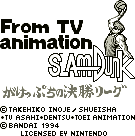
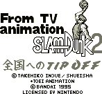

Slam Dunk - Gameboy Games

- Company: Bandai
- Date Released: 1994
- Genre: Basketball simulator
Controls
- A button: ???
- B button: ???
- Start: Pause
- Select: [not used]
This is a basketball game based on the popular anime. It isn't a pure
basketball game though; it uses a strange card system to make your plays. A
card allows you to pass, shoot, or dribble around a person. I don't know
enough Japanese to figure out what card does what. The game allows you to go
through a story mode(?) or just play a single game.

- Company: Bandai
- Date Released: 1995
- Genre: Basketball simulator
Controls
- A button: Shoot
- B button: Pass
- Start: Pause
- Select: [not used]
This is a basketball game based on the popular anime. It is easier to
play than the first one was, but the controls still take some practice to understand them.
You see a top view of the court with all your players listed as numbered
circles. The player with the ball is a completely solid circle. When you shoot,
you are given a bar with a moving cursor. You hit the shoot button again when
it is in the dark band of the bar for a more accurate shot. There are other times when
you confront an opposing player and must dribble or pass around him, or you are
defending against an opposing player and must try to steal the ball or stop
him from going around you.
Anime Video Game Resource Center © 1998 by Luis A. Cruz